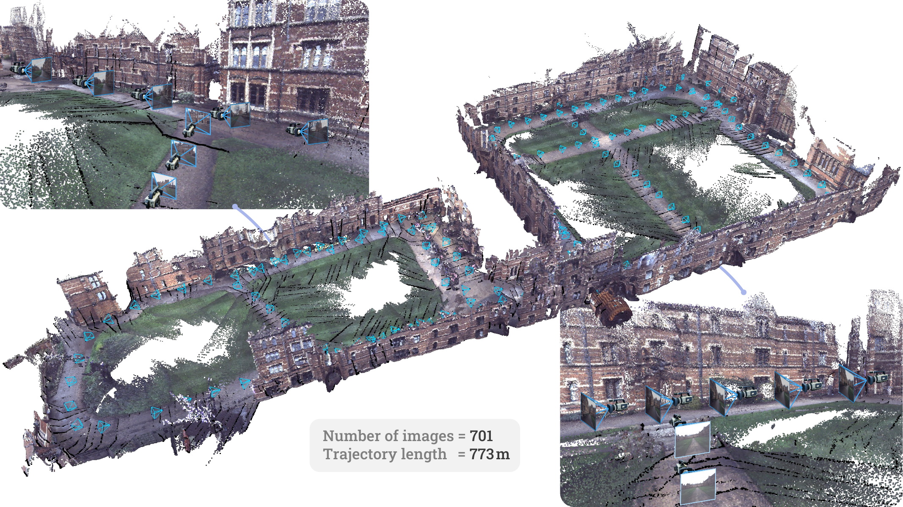
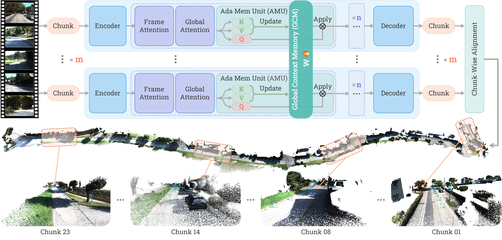
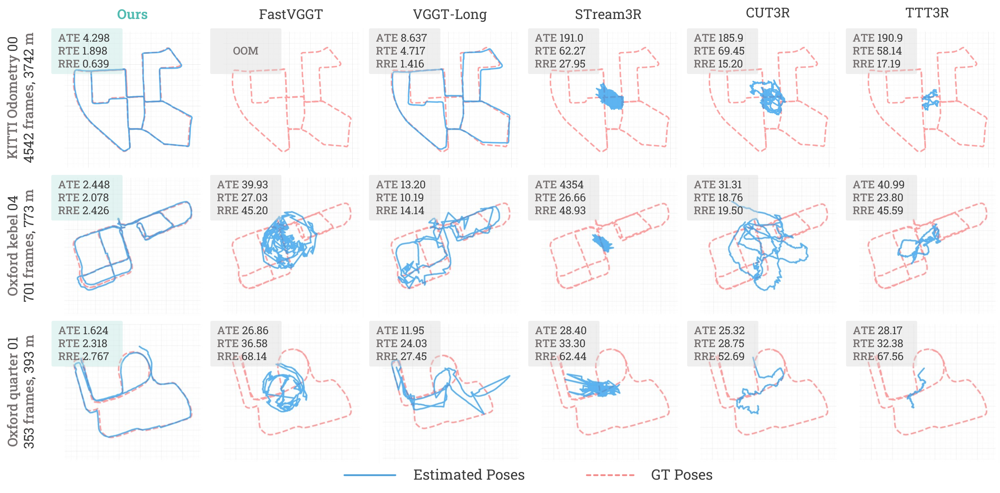
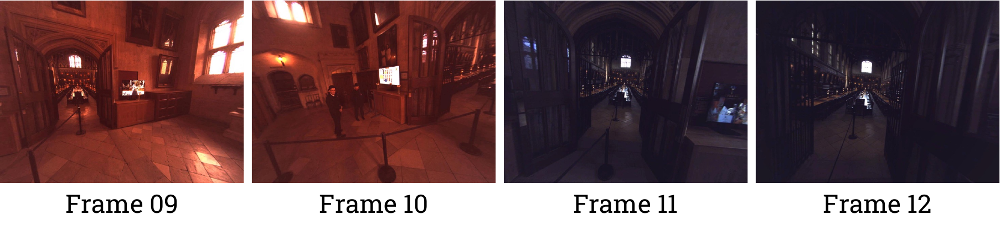

Academic deep read · computer vision
Scal3R：可扩展的测试时训练，面向大规模三维重建
把“每个片段各自看一眼”的局部推理，改造成能够跨越数公里、持续累积场景上下文的统一 RGB 重建管线。

一句话总结
- 做什么：从长 RGB 序列恢复相机姿态、深度和点云，面向数百到数千帧的公里级场景。
- 怎么做：在 VGGT 的交替帧/全局注意力后加入 GCM（Global Context Memory），用在线适应的 AMU 保存上下文，再用 GCS 在重叠块之间同步。
- 效果：主表中 ETH3D、Oxford Spires、Virtual KITTI 的点云 CD/F1 均为最佳；KITTI 与 Oxford 的长序列姿态误差显著低于学习型基线。
- 代价：10.32 GB 峰值显存、2.53 FPS（单 RTX 4090 资源对比），推理代码已发布，但训练与评测代码仍未公开。
1. 论文元信息与问题定义
Scal3R 的全名是 Scalable Test-Time Training for Large-Scale 3D Reconstruction。作者将任务限定为：给定观察同一场景的 RGB 序列，联合预测每帧相机参数、深度图、点云和用于跟踪的特征网格。论文的核心问题不是“单帧能否看出深度”，而是“当视角数量增长到数千时，局部正确是否还能累积成一个全局不漂移的地图”。
论文摘要把目标概括为“large-scale 3D scene reconstruction from long video sequences”。这句话的关键词是 long 与 large-scale：序列变长会让注意力计算呈二次增长，场景变大则会放大每一次局部姿态误差。作者选择以 VGGT 为基础，是因为它已经把相机、深度与点云放进统一的 Transformer 预测框架；Scal3R 负责补足 VGGT 在长期记忆上的缺口。
“efficiently compresses and retains long-range scene information”——论文摘要。
这不是把历史帧简单塞进一个更大的缓存。作者的主张是：把历史上下文编码进一个可以在测试时快速更新的小型神经网络，使“记忆容量”从固定向量扩展为可适应的参数集合。
2. 背景与动机：长序列为什么会失真
传统 SfM/SLAM 可以通过特征匹配、三角化和全局 BA 获得高精度，但通常依赖已知内参、IMU 或 LiDAR，且全局优化在长轨迹上昂贵。Feed-forward 3D foundation model 省去了显式匹配，然而它们把问题转移到了 Transformer 的上下文容量与计算复杂度上。
VGGT 的 24 层交替注意力同时建模帧内纹理和帧间几何，但全局 softmax attention 的成本随 token 数二次增长。FastVGGT 用 token merging 降低冗余，却会删掉细粒度空间线索。VGGT-Long 采用重叠 chunk 后独立重建、再对齐的 divide-and-conquer；它能运行得更长，却让每个 chunk 在推理时看不到远处的结构，局部误差会在对齐时被放大。
固定状态的流式模型（包括带 memory token 的方法和 TTT3R）则面临另一个瓶颈：无论场景多大，状态维度都有限。RNN 的更新可以写成：
人话：每个新 token 都要把历史压回同一个 $d$ 维盒子；盒子固定，历史越长，细节越容易互相覆盖。
因此论文提出的设计问题可以精确表达为：能否保留 VGGT 的几何推理，又让记忆容量随上下文表达能力扩展，同时把多 GPU 的 chunk 计算组织成一个共享状态，而不是若干互不相干的局部模型？
3. 预备知识：VGGT 与 Test-Time Training
对输入序列 $\mathcal{I}=\{I_i\}_{i=1}^{N}$，VGGT 的统一映射在论文式（1）中写为：
其中 $\mathbf{c}_i\in\mathbb{R}^{9}$ 是相机参数，$D_i$ 是深度图，$P_i$ 是点云，$T_i$ 是特征网格。后文的“几何输出”指 $D$ 与 $P$， “姿态输出”指 $\mathbf{c}$。
Test-Time Training（TTT）的关键转变是把上下文当作无标签数据集，把快速适应的参数 $W$ 当作隐状态。对当前 token 的 key/value 对 $(k,v)$，先更新快速权重，再用 query 读取：
人话：更新步骤把“这一段场景长什么样”写进小网络，应用步骤让当前 token 用这份记忆做预测。没有标签也能更新，因为 key/value 本身构成自监督的回归目标。
“Test-Time Training as Memory”——论文第 4.2 节标题。
4. 方法详解：从局部 chunk 到共享全局记忆
Scal3R 的方法由四个相互咬合的部件组成：重叠分块、GCM/AMU 的神经记忆、GCS 的跨块同步、以及最终的点云对齐与回环优化。Figure 2 将它们画成一条统一管线；下面按数据流拆开说明。
flowchart LR A[Long RGB
overlap chunks] --> B[VGGT backbone
frame and global attention] B --> C[GCM AMU
TTT update and apply] C --> D[GCS
gradient all reduce] D --> E[Decoder
camera depth points] E --> F[Sim3 alignment
global 3D scene]
4.1 重叠 chunk：控制二次注意力的输入规模
令 chunk 大小为 $M$、重叠大小为 $O$，第 $k$ 个块取：
实验默认 $M=60,O=30$。重叠帧既是相邻点云求相似变换的锚点，也是跨块一致性的局部证据；它不能替代全局记忆，但能让最终拼接有可计算的几何接口。
每个块可以分发到不同 GPU 并行通过 VGGT 主干。作者没有重写 VGGT 的几何头，而是在全局 attention 后插入 GCM，因此相机、深度、点云预测仍然沿用原有输出头。论文 Figure 2 中的 “Chunk 23 / 14 / 08 / 01” 不是四个固定片段，而是长序列中被并行处理、再由全局上下文连接的示意位置。
4.2 GCM 与 AMU：把记忆从向量提升为可适应网络
GCM（Global Context Memory）由 QKV 投影、轻量 MLP 形式的 AMU（Adaptive Memory Unit）和输出投影组成。对第 $i$ 个全局 attention 层输出的 token $\mathcal{X}_k^i$，作者先定义带门控的残差：
$\alpha\in\mathbb{R}^{d}$ 是可学习门控，$\otimes$ 是逐元素乘。它允许模型在不同通道上选择“相信当前 VGGT token”还是“吸收全局记忆”。
不加 GCM 时，交替注意力的残差是：
加入 GCM 后变为：
差异不在于“再加一层 attention”，而在于 GCM 的参数会在测试时改变。补充材料给出的 AMU 是 gated-SiLU MLP：
三组快速权重分别扮演门、值变换和输出投影；$\circ$ 是逐元素乘。论文设一个 head、宽度倍率 $k=4$，四个模块合计新增约 75.55M 参数。
4.3 chunk 级 TTT：一次写入整段上下文
细粒度逐 token 更新会降低 GPU 利用率，所以 Scal3R 把一个 chunk 的全部 token 当作一次 update unit。令 $K,V\in\mathbb{R}^{M\times d}$ 是当前块投影出的 key/value，更新写为：
其中 $\eta_i$ 是由输入预测的 token-wise learning rate。自监督目标采用负点积：
负号意味着优化会让记忆网络输出的 key 表示与对应 value 更相似。它不是额外的真值深度损失，而是把当前序列本身变成一个可压缩的关联记忆。
4.4 GCS：让不同 GPU 共享同一份“写入结果”
仅在每个 chunk 内更新 AMU 仍会得到多个局部记忆。GCS（Global Context Synchronization）先让每个块计算本地梯度，再把所有块的梯度相加并广播，得到共享更新：
这一步的工程含义很具体：GPU 之间交换的是 AMU 梯度，而不是整段图像或完整 feature map。共享权重更新后，每个 chunk 再用同一组 $W$ 处理自己的 query。这样，局部 decoder 看到的是“带远处观察先验的局部 token”。

4.5 训练目标与推理后的几何拼接
训练阶段端到端联合 GCM 与 VGGT 主干，使用多任务损失：
$\mathcal{L}_{cam}$ 是相机头的 L1 损失；深度和点云项包含置信度加权与梯度正则。GCM 峰值学习率 $10^{-4}$，主干为 $10^{-5}$，2k iterations warm-up，梯度裁剪范数 1.0。
推理时，模型先分别预测各块，再用重叠区域估计相似变换，将点云和姿态融合；存在回访时，额外检索候选回环并进行 pose-graph refinement。单 GPU 也可以按顺序处理，但速度下降。这个“先记忆、后对齐”的组合是关键：GCM 减少局部预测漂移，重叠对齐负责把多个局部坐标系落到同一个全局坐标系。
5. 实验分析：提升来自哪里，代价是什么
主实验覆盖 Virtual KITTI v2、KITTI Odometry、Oxford Spires 三个姿态基准，以及 ETH3D、Oxford Spires、Virtual KITTI 三个几何基准。姿态指标是 Sim(3) 对齐后的 ATE、RRE（°/100m）和 RTE（m/100m）；几何指标是 Umeyama 对齐后的 Chamfer Distance（CD，越低越好）和 F1（越高越好）。长序列默认 chunk/overlap 为 60/30，失败场景按该场景最差有效分数计入平均值。
5.1 姿态精度与资源
Table 1 的最重要信息不是某个单点冠军，而是 Scal3R 在真实长序列上把“局部能跑”变成“全局不漂”。相对于 VGGT-Long，KITTI ATE 从 25.94 降到 14.55（约下降 43.9%），Oxford ATE 从 15.46 降到 4.45（约下降 71.2%）。Virtual KITTI 上 DPVO++ 仍有更低的 ATE，但它要求已知相机内参；Scal3R 面向的是 RGB-only 设置。
| 方法 | VKITTI ATE ↓ | KITTI ATE ↓ | Oxford ATE ↓ | 显存 | 时间(s) | FPS ↑ |
|---|---|---|---|---|---|---|
| Scal3R (Ours) | 0.85 | 14.55 | 4.45 | 10.32 | 300.76 | 2.53 |
| VGGT-Long | 1.03 | 25.94 | 15.46 | 11.77 | 168.83 | 4.80 |
| FastVGGT | 21.83 | 206.69 | 31.18 | 22.58 | 48.13 | 18.22 |
| DPVO++† | 0.48 | 52.69 | 29.17 | 0.89 | 20.71 | 35.35 |
| COLMAP | 9.09 | 37.79 | 0.15 | 0.00 | 6614.73 | 0.17 |
Table 1 摘录。资源列来自 KITTI 03/04/10、平均 758 帧的单卡比较；除 FastVGGT 使用 A800 外，其余方法使用 RTX 4090。† 表示需要已知相机内参。显存数值沿用论文表格标注，论文 caption 未另写单位。
Figure 3 把数值转成轨迹形状：KITTI 00（4542 帧、3742 m）中 Scal3R 的 ATE/RTE/RRE 为 4.298/1.898/0.639，VGGT-Long 为 8.637/4.717/1.416，FastVGGT 直接 OOM。Oxford Keble 04（701 帧、773 m）上，Scal3R 仍保持 2.448 m ATE，而 STream3R 的轨迹已经明显偏离。论文原文对图的概括是“preserves global structure with lower drift”；这里的 lower drift 不是视觉措辞，而是对闭合回路中累计位姿误差的直接描述。
“preserves global structure with lower drift”——Figure 3 caption。

5.2 点云几何：全局一致性是否真的落到表面
Table 2 给出了更直接的几何证据。Scal3R 在三个数据集的 CD/F1 都是表内最佳：ETH3D 为 0.11/0.91，Oxford 为 0.96/0.96，Virtual KITTI 为 0.40/0.91。相较 VGGT-Long，CD 分别下降约 54%、72% 和 78%，F1 分别提高 0.07、0.16 和 0.21。这说明改进不只体现在相机轨迹上；对齐后的点云也更少出现断层、重复表面和局部塌缩。
| 方法 | ETH3D CD ↓ | ETH3D F1 ↑ | Oxford CD ↓ | Oxford F1 ↑ | VKITTI CD ↓ | VKITTI F1 ↑ |
|---|---|---|---|---|---|---|
| Scal3R (Ours) | 0.11 | 0.91 | 0.96 | 0.96 | 0.40 | 0.91 |
| VGGT-Long | 0.24 | 0.84 | 3.41 | 0.80 | 1.78 | 0.70 |
| FastVGGT | 0.50 | 0.70 | 2.76 | 0.76 | 1.73 | 0.67 |
| TTT3R | 0.43 | 0.59 | 9.03 | 0.31 | 3.49 | 0.49 |
| CUT3R | 0.41 | 0.60 | 6.93 | 0.45 | 5.67 | 0.39 |
Table 2 摘录。CD 是 accuracy 与 completeness 的平均；不同数据集使用不同距离阈值（ETH3D 0.25、VKITTI 1.0、Oxford 4.0）计算 F1。

5.3 消融：GCM 是主增益，GCS 是传播器
Table 3 的两块实验来自互补设置，不能直接横向比较绝对数值。左块把 AMU 状态从 1M 增至 4M，ATE 从 0.99 降到 0.85；右块移除 GCM 后 ATE 变成 19.00，移除 GCS 后为 15.80，完整模型为 13.70。由此可以区分两个作用：GCM 提供可存储的长期容量，GCS 把每个局部块写入的内容传播成序列级上下文。
| 变体 | RRE ↓ | RTE ↓ | ATE ↓ | 解释 |
|---|---|---|---|---|
| GCM state 1M | 1.01 | 1.01 | 0.99 | 容量较小 |
| GCM state 2M | 0.95 | 0.91 | 0.93 | 容量增加 |
| GCM state 4M | 0.87 | 0.84 | 0.85 | 左块最佳 |
| w/o GCM | 1.30 | 7.03 | 19.00 | 失去长期记忆 |
| w/o GCS | 1.28 | 7.01 | 15.80 | 无法跨块同步 |
| Full model | 1.17 | 5.99 | 13.70 | 右块最佳 |
Table 3 摘录。状态大小消融与 global-context 消融的评测集合不同；前者使用 16 张 A800 训练，后者使用 8 张 A800，均训练 60k iterations。
5.4 补充基准与长度扩展
补充 Table 4 显示，Scal3R 在 ScanNet++（ATE 0.08，平均 924 帧）和 TUM-RGBD（0.07，平均 926 帧）取得最佳，但 Waymo 上 FastVGGT 以 1.28 胜过 Scal3R 的 1.52。这个反例很重要：论文的优势集中在长、稀疏、需要跨块全局一致性的场景，并非所有视频分布都无条件领先。
| 方法 | ScanNet++ ATE ↓ | TUM-RGBD ATE ↓ | Waymo ATE ↓ |
|---|---|---|---|
| Scal3R (Ours) | 0.08 | 0.07 | 1.52 |
| VGGT-Long | 0.13 | 0.08 | 1.78 |
| FastVGGT | 1.56 | 0.42 | 1.28 |
| TTT3R | 0.55 | 0.31 | 3.49 |
Supplementary Table 4。Waymo 的最优项属于 FastVGGT，Scal3R 在该列为竞争性而非第一名。
长度扩展实验把输入从 150 增至 990 帧，RPE 维持在 0.07–0.08 m，时间从 51.19 s 增至 382.80 s，吞吐从 2.93 降至 2.59 FPS。时间近似线性而不是二次增长，正是 chunk 并行与神经记忆设计的工程收益；但吞吐下降约 12%，说明跨块同步与对齐仍有固定开销。
6. 讨论：方法的适用边界
技术意义
Scal3R 把 TTT 从“为当前 token 做小修正”变成“为整段视觉上下文写入参数”。这使长期记忆不再受单一 hidden vector 的维度上限约束，同时保留 VGGT 的几何输出头。
系统意义
GCS 的通信对象是 AMU 梯度，chunk 的图像与中间特征仍可局部处理；因此它能在多 GPU 上扩展，也能退化到单 GPU 顺序模式。代价是更复杂的运行时状态管理和同步调度。
从方法论看，论文的贡献不是发明一个更大的 Transformer，而是重新定义“上下文”：历史观察既可以是 token，也可以是会被测试序列塑形的快速权重。这个视角连接了线性注意力、TTT 与 3D 几何重建，但也带来一个新的验证问题——模型记住的到底是可迁移的场景规律，还是当前序列的外观偏差？
实验的答案是有条件的。跨天气、室内外和不同数据源的训练提高了泛化；然而 Oxford Spires 的评测过滤了 LiDAR–RGB 时间戳不一致的视图，并剔除了少于 50 帧的场景。再加上失败场景按最差有效分数计入平均，数字对评测协议很敏感，不能脱离协议直接解释为“所有开放环境都稳定”。
6.1 作者明确报告的失败模式

第一类失败是序列内部出现突发照明或颜色变化；GCM 会努力保留长期上下文，但跨块对应本身已经不可靠。第二类失败是极端视角稀疏：只有几十张图，却要覆盖数百米或数公里，局部预测就缺少足够的几何约束。这两点是作者在补充材料中明确写出的边界，而不是本文推测。
6.2 独立判断：应当如何解读“可扩展”
我认为 Scal3R 的“可扩展”更准确地指 误差与运行时间的增长规律，而不是无限制的实时性。它把时间复杂度从一次性全局 attention 的爆炸，换成近似线性的 chunk 处理；但 Table 1 中 2.53 FPS 仍远低于轻量在线方法，且新增 75.55M 参数与多 GPU all-reduce 都需要部署资源。
第二个独立风险是统计可复现性。论文没有报告多次运行的均值、方差或置信区间；消融只覆盖 7 条或 6 条序列，且两个消融块不直接可比。对于长序列这种容易被单个回环、光照切换影响的任务，单次平均数不足以判断最坏情况分布。
7. 代码对应与复现边界
官方仓库 zju3dv/Scal3R 已公开推理代码和配置，README 明确写着当前 release 是 inference-only，评测与 benchmark preparation 尚未发布。下面的对应关系来自公开仓库的实际实现；它们足以验证数据流，但不足以重建论文的训练环境。
w0_grad_sum, w1_grad_sum, w2_grad_sum = None, None, None
for block_index in range(len(agg_state_refs)):
agg_state = materialize_payload(agg_state_refs[block_index])
g0, g1, g2 = model.agg_regator.ttt_gradient(
index=layer_index, ttt_order=ttt_order_grad,
**to_cuda(agg_state, args.device),
)
if w0_grad_sum is None:
w0_grad_sum, w1_grad_sum, w2_grad_sum = g0, g1, g2
else:
w0_grad_sum.add_(g0)
w1_grad_sum.add_(g1)
w2_grad_sum.add_(g2)
shared_w0, shared_w1, shared_w2 = model.agg_regator.ttt_update(
index=layer_index,
tokens=shared_tokens,
w0_grad=w0_grad_sum,
w1_grad=w1_grad_sum,
w2_grad=w2_grad_sum,
ttt_order=ttt_order_grad,
)这段代码对应论文式（10）：先遍历所有块求和，再生成一组 shared fast weights。后续 `ttt_apply` 把它们应用到每个块，而不是让各块保留互相独立的 AMU。
gate_before_act = ki @ w0_now
hide_before_mul = ki @ w2_now
hidden = F.silu(gate_before_act, inplace=False) * hide_before_mul
dhidden = vi @ w1_now.transpose(-1, -2)
dhide_before_mul = dhidden * F.silu(gate_before_act, inplace=False)
dgate = dhidden * hide_before_mul
dgate_before_act = silu_backprop(dgate, gate_before_act)
w0_grad = (ki * lr0i).transpose(-1, -2) @ dgate_before_act
w1_grad = (hidden * lr1i).transpose(-1, -2) @ vi
w2_grad = (ki * lr2i).transpose(-1, -2) @ dhide_before_mul
qi = q[:, s:e, :]
oi = (F.silu(qi @ w0_now, inplace=False) * (qi @ w2_now)) @ w1_now论文把这部分抽象成式（8）–（9）的梯度下降；公开实现进一步使用手写梯度、Muon/Newton–Schulz 更新、权重归一化和输入相关学习率。也就是说，仓库提供了论文思想的可执行落点，但多了一层未在主文中完整展开的工程细节。
agg_regator_cfg:
img_size: 518
patch_size: 14
embed_dim: 1024
frame_use_ttt: false
global_use_ttt: true
ttt_layer_idx: [14, 17, 20, 23]
ttt_cfg:
num_heads: 1
inter_multi: 4
base_lr: 0.01
muon_update_steps: 5
use_ddp_allreduce: true
use_modulation: true复现提示：论文补充材料以 1-based 方式描述 GCM 位于第 4、11、17、24 个全局层；发布配置却写成 zero-based 的 `[14,17,20,23]`。两者都明确是 4 个模块，但层位置没有在论文与仓库之间解释清楚。若要逐表复现，应固定 commit、记录配置，并把这一差异作为实验变量，而不是默认它们完全等价。
仓库还提供 `block_size=60`、`overlap_size=30` 的默认推理计划、重叠子图的 Sim(3) 对齐和可选回环优化。模型权重位于 Hugging Face；没有训练脚本、数据准备脚本或公开评测 runner，因此论文的 32×A800、60k iterations、约 3 天训练过程目前只能依据论文描述审阅，不能由仓库一键复现。
8. 结论
Scal3R 的核心贡献可以压缩成一个组合：VGGT 的几何预测 + TTT 的参数化记忆 + GCS 的跨块同步 + 重叠块的几何对齐。GCM 负责让历史信息有足够表达能力，GCS 负责让多 GPU 的局部观察共享同一份写入结果，最后的 Sim(3) 对齐把预测重新放回一个可测量的全局坐标系。
实验支持一个清晰但有边界的结论：在长、稀疏、外观变化尚可对应的 RGB 序列上，Scal3R 能显著降低漂移并提高点云完整性；在 Waymo 等分布更密集或更适合 token merging 的场景，它不保证第一名；面对突发照明和极端稀疏视角，作者也承认方法会失败。对研究者而言，最值得复用的不是某个固定层索引，而是“把上下文写进可适应参数、再跨设备共享”的设计模式。